30dm， ［假设3］
30dm， ［假设3］“革隆（Gelon）国王，有些人认为沙子的数目是无穷的，而且我所说的沙子不仅存在于叙拉古和西西里的其他地方，还存在于无论是否有人居住的每一地区；也有人不同意沙子的数目无穷多，但却认为无法给大于沙子数量的数命名．显然，持这种观点的人，如果他们还能设想堆积的体积像地球那样大的沙堆，其中包括所有海洋和地球的凹陷之处都填满与最高山峰等高的沙粒，他们也无法认识到任何数都可以表示，即使它在数量上超过了如此堆积的沙子的若干倍．但是我要用您能理解的几何证明为您展示一种方法，它由我命名并已载入呈给赛克西普斯（Zeuxippus）的著作中．这种方法不仅能表示超过地球容积那样多的沙粒数量的数，而且可以表示超过宇宙体积的沙粒数量的数．您知道，所谓‘宇宙’被大多数天文学家称为这样一个球体：它以地球中心为中心，以太阳中心到地球中心间的直线为半径．这是常识，您从天文学家那里听到的就是这种常识（
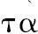
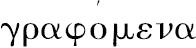
）.然而，萨摩斯的阿里斯塔修斯（Aristarchus）发表的一本书中有一些假设，其中的前提导致下述结果：宇宙比我们现在所说的要大许多倍．他假定恒星与太阳保持不动，地球围绕太阳做圆周运动，太阳位于该轨道中间，恒星球像太阳一样位于同一个中心，恒星球是如此之大，即他设想地球绕行所在的圆对恒星距离产生的比如同该球球心对其表面产生的比．容易看出这是不可能的，因为球的中心没有大小，我们不能想象它对该球球面产生什么比值．不过，我们必须这样理解阿里斯塔修斯的意思：设想地球如它所处是宇宙的中心，地球对我们描述的‘宇宙’之比率，等同于包含他假定地球绕行所在圆的球对恒星球之比率．这是由于他改写了他对这种假设结果的证明，特别地又流露出假定表述地球运动所在球的大小等同于我们所称的‘宇宙’．我们认为，即使一个如阿里斯塔修斯假定的恒星球那样大的球是由沙粒构成的，我仍将证明，某些在数量上超出相当于球体积的众多沙粒数目也可以用在《原理》[1]中命名的数来表示．它规定下述假设．
1.地球的周长不大于约3000000斯达地[2]．
如您确知，一些人已验证过周长为300000斯达地之说这一事实．而我进一步设地球此值10倍于先辈们所想，即设周长不大于约3000000斯达地．
2.地球的直径大于月球的直径，太阳的直径大于地球的直径．
该假设遵从大多数早期天文学家的观点．
3.太阳的直径不大于约30倍月球的直径．
早期天文学家认为这理所当然．欧多克索斯（Eudoxus）宣称该值约为9倍．我父亲菲底亚斯（Pheidias）[3]认为是12倍，阿里斯塔修斯试图证明太阳的直径比月球直径大于18倍而小于20倍．但是为了使我命题的真实性远离争议，我更甚于阿里斯塔修斯，设太阳直径不大于约30倍月球的直径．
4.太阳的直径大于内接于宇宙（球）中最大圆内一千边形的边长．
我用这一假设[4]是因为阿里斯塔修斯发现太阳出现于黄道圆约1/720的部分，我本人尝试用即将描述的方法实验性地
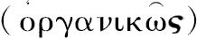
寻求太阳及其目视顶点所对的角度（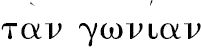
，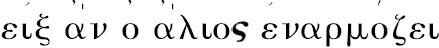
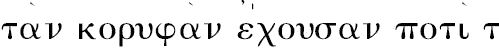
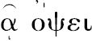
）.”［因为历史的兴趣放在阿基米德关于这一论题的确切原文上，论文至此部分已逐字翻译出来．余下部分可以更自由地再现．进行其数学内容之前，只有必要陈述阿基米德下一步要描述的如何达到太阳所对角的上下限．他在这里用了一根长竿或标尺
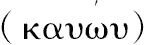
，一端钉上一个小圆柱或圆板，恰在太阳升起时将杆指向它（直视太阳是必要的），然后将圆柱置于刚好隐蔽的距离处，太阳恰消失于隐蔽处，最后测量通过圆柱所对的角度．他也解释了他认为必须做的这种校正，因为“眼睛不能从一个点来看，而只能从某一面积看”（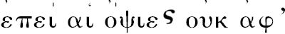
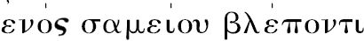
，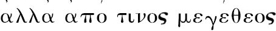
）.］实验结果显示：太阳直径所对的角小于一个直角的1/164，而大于其1/200.
（在这种假设下）证明太阳的直径大于内接于一个“宇宙”大圆的一千边形，或具有1000条相等边图形的边长．
设一张纸的平面通过太阳的中心、地球的中心和我们的眼睛，太阳刚从地平线升起，设平面交地球于圆EHL，交太阳于圆FKG，地球和太阳的中心分别为C、O，E为眼睛的位置．
进一步，设平面交“宇宙”球（即球心为C，半径为CO的球）于大圆AOB.
自E向圆FKG作两条切线，切点为P、Q，自C向同一圆作两条切线，切点为F，G.
设CO分别交地球与太阳所在的圆于H，K；设CF，CG交大圆AOB于A、B.
连接EO，OF，OG，OP，OQ，AB，设AB交CO于M.
由于太阳刚在地平线上升起，此时CO＞EO.
因此 ∠PEQ＞∠FCG.
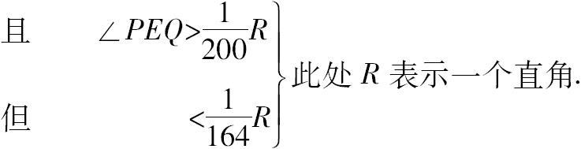
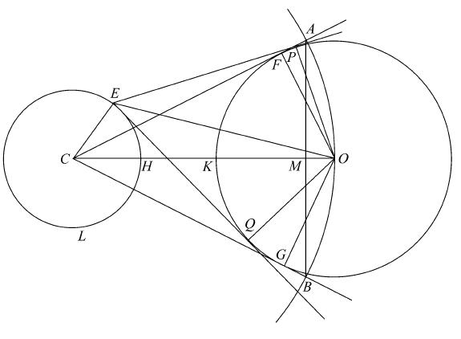
因此
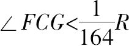
，毋庸置疑，弦AB所对的大圆弧小于该圆圆周的1/656，即AB＜（该圆内接656边形的边）.
此时，大圆中任意的内接多边形的周长小于
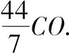
［参见《圆的度量》命题3］因而 AB：CO＜11：1148，
且，更加有
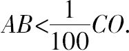
（α）又由于CA=CO，AM垂直于CO，当OF垂直于CA时，
AM=OF.
因此 AB=2AM=太阳的直径．
这样太阳的直径
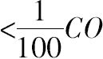
，由（α），而且，毋庸置疑，地球的直径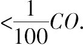
. ［假设2］由此
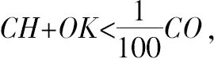
因此
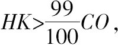
或 CO：HK＜100：99.
并且 CO＞CF，
同时 HK＜EQ.
因此 CF：EQ＜100：99. （β）
于是，在直角三角形CFO，EQO中，直角边
OF=OQ，但EQ＜CF（由于EO＜CO）.
则有∠OEQ：∠OCF＞CO：EO，
但 ＜CF：EQ[5]，
将角加倍 ∠PEQ：∠ACB＜CF：EQ
＜100：99，通过上述（β）
但是
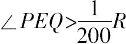
，通过假设．因此
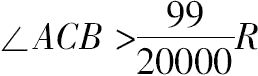
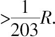
接着有弧AB大于大圆AOB圆周的1/812.
因此，更有，
AB＞（大圆内接一千边形的边长），
且如上所证AB等于太阳的直径．
下列结果可被证明：
“宇宙”的直径＜10000（地球的直径），
并且 “宇宙”的直径＜10000000000斯达地．
（1）暂设du表示“宇宙”的直径，ds，de，dm分别表示太阳，地球和月球的直径．
由假设 ds30dm， ［假设3］
且 de＞dm； ［假设2］
则 ds＜30de.
现在，用最后的命题
ds＞（大圆内接一千边形的边长），
因而 （一千边形的周长）＜1000ds
＜30000de.
但是内接于一个圆，边长多于6的任意正多边形的周长都大于内接于同一圆的正六边形的周长，也大于直径的三倍，因此
（一千边形的周长）＞3du.
随即有 du＜10000de.
（2） 地球的周长3000000斯达地． ［假设1］
且地球的周长＞3de，
因而 de＜1000000斯达地，
由此 du＜10000000000斯达地．
假设5
假定一个单位量的沙子体积不超过一颗罂粟种子，它包含不超过10000粒沙子．
继而假定罂粟种子的直径不小于1/40手指的宽度．
数的级与周期
Ⅰ.我们传统的命数方法可以数到一万（10000）；据此我们能将数目表示到一万万（100000000），将这些数称为第1级数．
假定100000000为第2级数的单位数，设第2级数包含从此单位数到（100000000）2的数．
重复这一步骤，从第3级数的单位数可数到（100000000）3为止；依此类推，直到第100000000级数的结尾（100000000）100000000，称之为P.
Ⅱ.假定刚刚描述的从1到P的数形成第1周期数．
设P是第2周期第1级的单位数，这一级包含从P到100000000P的数．
设最后一数为第2周期第2级的单位数，这一级可数至（100000000）2P.
我们能用这种方式数下去，直至第2周期第100000000级的末尾（100000000）100000000P，或P2．
Ⅲ.取p2为第3周期第1级的单位数，以同样方式可数至第3周期第100000000级的末尾数P3．
Ⅳ.取P3为第4周期第1级的单位数，继续同样的程序直至数到第100000000周期第100000000级的末尾数P100000000．这最后的数阿基米德表述为“第万万周期第万万级的第万万单位数”，显而易见是（100000000）99999999与P99999999乘积的100000000倍，即P100000000．
［这样描写数的方案可更清晰地依靠下列标志建立．
第1周期．
第1级．从1到108的数．
第2级．从108到1016的数．
第3级．从1016到1024的数．
第108级，从
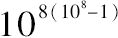
到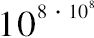
（即使说P）的数．第2周期．
第1级．从P·1到P·108的数．
第2级．从P·108到P·1016的数．
第108级．从
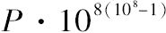
到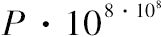
（或P2）的数．
第108周期．
第1级．从
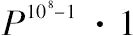
到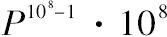
的数．第2级．从
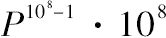
到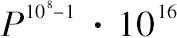
的数．
第108级，从
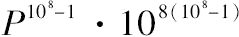
到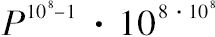
（即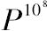
）的数．这一方案的巨大范围我们将在下述情况下意识到，它认为第1周期的末尾数现在可表示为1后面跟着800000000个零，第108周期的末尾数则需要将这些零的个数增加到100000000倍，即1后面有80000百万百万个零］
八位组
考虑首项为1，次项为10的连比项级数［即几何级数1，101，102，103，…］．这些项的第一个八位组［即1，101，102，…，107］相应地列入上述第1周期第1级数，第二个八位组［即108，109，…，1015］列入第2周期第2级中．八位组的首项是每种情形中与级数相一致的单位数．类似地有第三个八位组，等等．我们可用同样方法排置任何八位组数．
定理
若存在任意项数的一个连比级数，称之为A1，A2，A3，…Am，…An，…Am+n-1，…其中A1=1，A2=10［因此该级数形成几何级数1，101，102，…，10m-1，…10n-1，…10m+n-2，…］，如果任取两个项Am，An相乘，积Am·An将是同一级数中的一个项，并且它距An的项数与Am距A1的项数一样多；此外它距A1的项数比Am与An各自距A1的项数之和少1.
取距An和Am距A1等项数的项，此项数是m（首末项都被数在内），则该项距An为m项，因此是Am+n-1项．
我们已由此证明了
Am·An=Am+n-1．
于是在连比例级数中距其他项项数相等的项成比例．
即
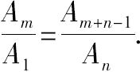
但 Am=Am·A1，因为A1=1.
因此 Am+n-1=Am·An. （1）
第二个结果是明显的，因为Am距A1为m项，An距A1为n项，Am+n-1距A1即为（m+n-1）项．
应用于沙粒数量
由假设5
（罂粟种子的直径）
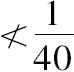
（手指宽度）；又因为球体积之比是它们直径的三次比，可推出下式：
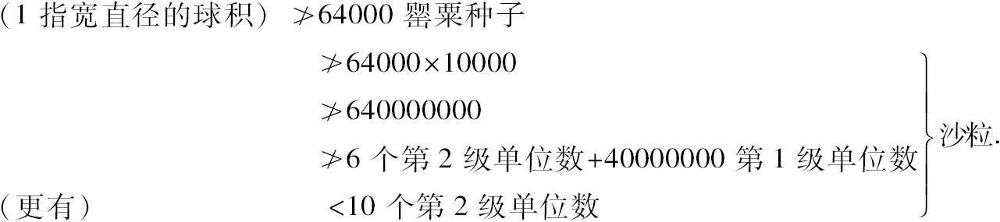
现在我们逐渐增大假定球的直径，每次乘上100.记住球积每次乘上1003或1000000，则具有每次相继直径的球所包含的沙粒数目可由下式表示．
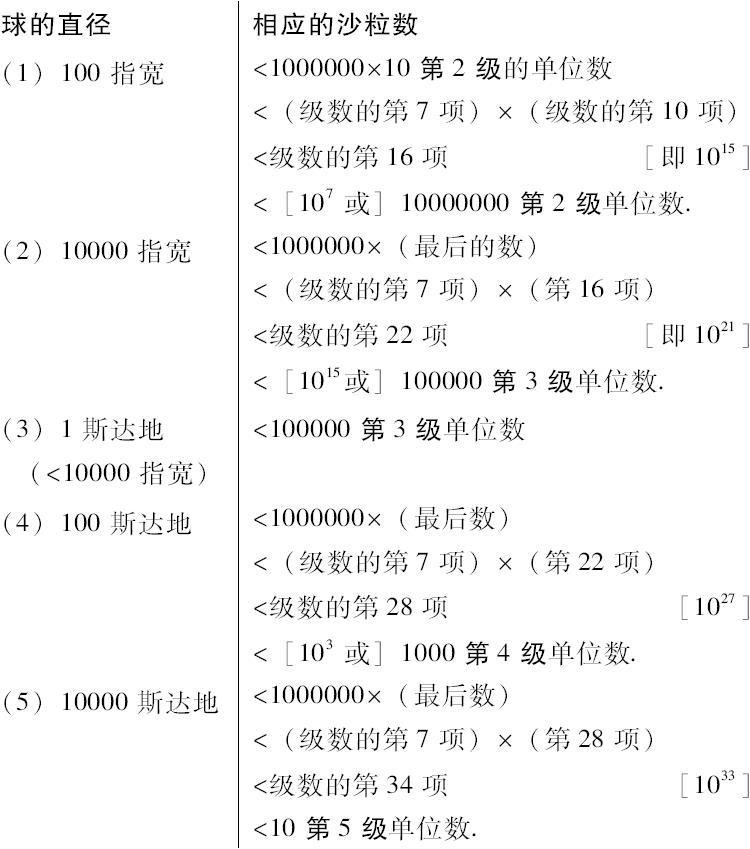
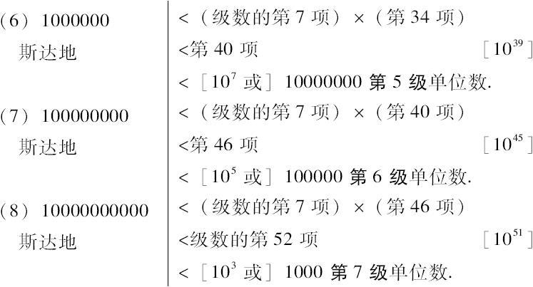
但据上述命题，
“宇宙”的直径＜10000000000斯达地．
因此能包含于我们的“宇宙”这样尺寸的球中的沙粒数目少于1000个第7级单位数［或1051］．
由此可进一步证明阿里斯塔修斯认为的恒星球大小的球体所包含的沙粒数目少于10000000个第8级单位数［或1056+7=1063］．
利用假设，
（地球）：（“宇宙”）=（“宇宙”）：（恒星球），
而且 （“宇宙”的直径）＜10000（地球的直径）.
由此
（恒星球的直径）＜10000（“宇宙”的直径）.
因此
（恒星球）＜（10000）3（“宇宙”）.
继而包含于一个与恒星球相等的球中的沙粒数:
＜（10000）3×1000第7级单位数
＜（级数的第13项）×（级数的第52项）
＜级数的第64项 ［1063］
＜［107］10000000第8级单位数．
结论
“革隆（Gelon）国王，我想这些细节对绝大多数没学过数学的人来说难以置信，但对那些熟悉有关内容并已思考过地球、太阳和月球距离与大小问题的人，证明会使他们坚信不疑．正因为如此，我认为这一论题未必不适合您的思考．”
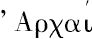
是呈给赛克西普斯（Zeuxippus）著作的标题，参见《阿基米德全集》导论第2章结尾阿基米德失传著作详表的注记．[2]斯达地（stadia，stadium的复数形式），古希腊长度单位，约合607英尺．
[3]菲底亚斯（Pheidias），
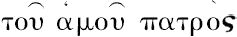
是布拉斯（Blass）对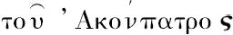
的改正（Ja-hrb.f.Plilol.cxxvii，1883）.[4]严格说来这不是一条假设；这是一个后面用已描述过的实验结果证明的命题．
[5]这里的命题当然假定与下述三角公式是等价的：如果α、β是两个小于直角的角，α大于β，则有
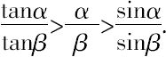
有关《沙粒的计算》一文的意义
阿基米德时代希腊记数法采用“分级符号制”或曰“逐级命数法”，即用字母表中的前9个字母表示1，2，…，9；第10～18个字母表示10，20，…，90；第19～27个字母表示100，200，…，900。为了与文字单词相区别，数字符号上常加横线。字母记数是一形两用，增加了记忆上的困难，而且运算使用繁琐。
阿基米德在希腊当时最大的数字“万”的基础上创用“万万”（108），并使用了级、周期等概念，以便写出更大的数。这是开创性的成果，其重要之处不仅在于实际上给出写任何大数的方案，更是阐述了可以把数写得大到不受限制的思想。他的记数方法在古代各种大数记法中使用符号最经济，数目表示简洁明了。直到现代，人们仍然遵循阿基米德给出的原则处理大数，只是每种单位数的名称各有不同而已。
阿基米德的记数方法距十进位值制记数法尚有距离，这成为包括高斯在内的一些数学家感到遗憾之处。不过，单就计算沙粒来看，彻底革新古希腊的记数制度并不十分必要，而充分利用已有成果巧妙解决实际问题倒是阿基米德做学问时经常采用的方法。
阿基米德在推导沙粒数量时给出“同底数的幂相乘，底数不变，指数相加”的定理，将幂的积与幂的指数和联系起来，这一性质成为17世纪对数发明的基石。《沙粒的计算》还首次记载了阿里斯塔修斯提出的日心说，被认为是世界上最早的日心学说。阿基米德有许多失传的著作。短短《沙粒的计算》能流传至今，应该说与它内容的重要性有很大关系。（译者注）